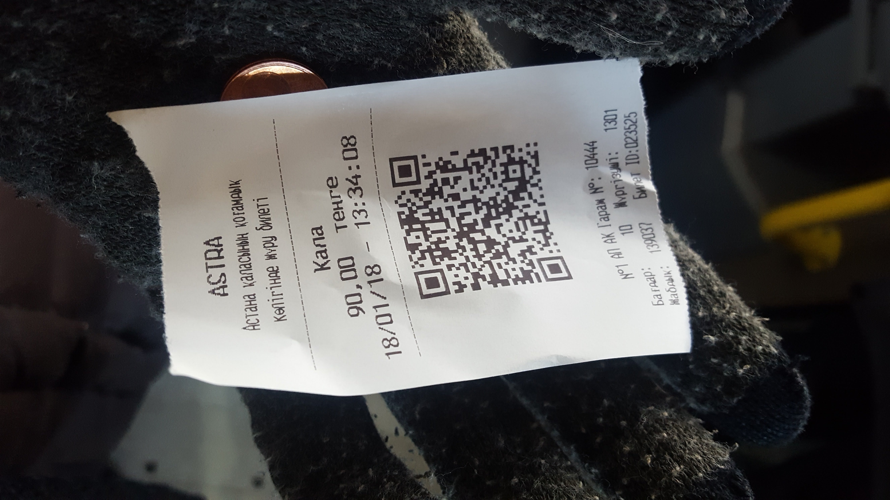
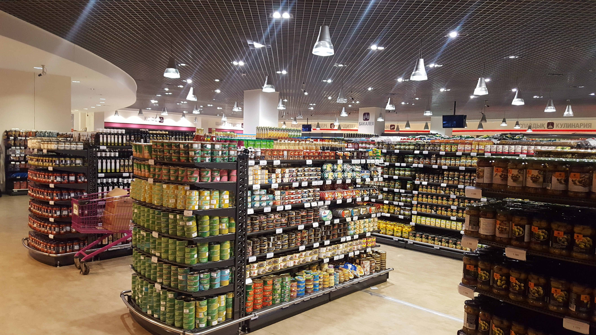
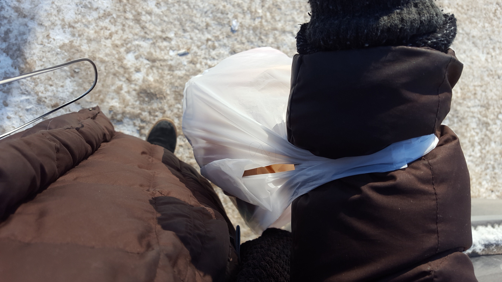

Traveler risks it all to get this one item. Can you guess what it is?
~A Journey~
The first and arguably most difficult step of the journey- going outside.
Walking towards and then onto the bus
Pay the fee- 90 tenge / ~30 cents.
Handed lil slip.
The bus.

Off the bus- walking through the city towards the mall, “Keruen,” a popular mall in downtown Astana. Kereun is here
Steps to Kereun
Walking around in Keruen mall. Looking for Gal Mart! For all the gals out there.
Here we are- your neighborhood upscale supermarket with all of your commodities, foreign and local.
Girl enters Gal Mart, seeks aisle of milk.
Approaching milk aisle.
so now- it is only sometimes that Gal Mart has stock of “non-dairy” beverages like Almond or Soy. One can never know. Do they have it on this beautiful winter day?
no
The people here think i'm 100% crazy
out we go- back into the cold blue tundra
Mildly distraught.
Spotted: Uggs!
Walking through the streets. Lots of people are out and about because It’s so warm! Almost slipped on the ice, but didn’t. Challenge alert!
walking walking
a few blocks away and we start to approach Gastronom- another upscale supermarket.
Approaching Gastronom

So here we are-I’m not much of a selfie taker.
We are at Gastronom looking around for the milk aisle. Ah ha!- does this lady look like she’s posing?! Comment yes or no below
Utter shock. What a display!
So they have rice milk, brown rice milk, soy milk, ORGANIC soy milk, chocolate soy milk, banana soy milk(no), and vanilla, but no almond. But that’s okay. With such a selection, I’m honored to be presented with such beautiful array of non-dairy beverages. (also, there is candy bar milk? Do they have this in America?!)
Can we call this a success? (yes, I think so)
hand-in-hand, we make our way to the bus stop. We’re taking the 52 home.
The bus ride back.
There’s my bus- onward to it’s next stop.
Another pair of Uggs! It’s a fashion statement!
What’s the moral of the story? ( what is the moral??) -probably that the world has experienced an incredible amount of de-localization and standardization of availability and choice when it comes to food, which is symptomatic of the total interdependency of the global economy. But the REAL moral here is that you can find soy milk anywhere provided you look hard enough.